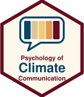
Psychology of Climate Change Communication · Week 4
Dr. Viktoria Cologna and Dr. Jan Pfänder
Trigger warning to psychologists
A narrow definition of mental models:
A simplified picture, in someone’s head, of how something works (e.g., climate change as a bathtub (Sterman & Sweeney, 2002)).
A broader definition I would like to take today:
General features of human psychology that describe how people think, decide, and act across a range of contexts.
Week 2 · Public opinion on climate change and the deficit model
Can facts change people’s minds? Maybe, but they are often not quite enough.
Week 3 · A question of trust
Without trust in the messenger, it is hard to change minds.
TODAY
Week 4 · Mental models and framing
How can we communicate more effectively to change minds? By appealing to features of human psychology.
(some of these features were teased in Week 1 already)
The next slide has one text for each half of the room. The left half reads the left column, the right half reads the right column.
Read your text, make your choice, and write it down.
Imagine that Switzerland is preparing for the outbreak of an unusual disease, which is expected to kill 600 people. Two alternative programs to combat the disease have been proposed. Assume that the exact scientific estimate of the consequences of the programs are as follows:
Left half
If Program A is adopted, 200 people will be saved.
If Program B is adopted, there is 1/3 probability that 600 people will be saved, and 2/3 probability that no people will be saved.
Right half
If Program C is adopted 400 people will die.
If Program D is adopted there is 1/3 probability that nobody will die, and 2/3 probability that 600 people will die.
Which of the two programs would you favor?
Left half: who chose Program A?
Right half: who chose Program C?
When the programs were described in terms of lives saved (left half), 72% of participants chose the sure option (Program A).
When the same programs were described in terms of deaths (right half), only 22% chose the sure option (Program C).
In other words, people were more risk seeking when lives might be lost, than when they could be gained.
Programs A and C are the same program. So are B and D.
The facts are identical. What differs is the wording, and the wording seems to change what people choose.
This is called a framing effect. It happens because we use mental models to evaluate information.
Much of economics and political science starts from rational choice theory.
The main idea: individuals make rational decisions by analysing the costs and benefits of every available option.
However, some human judgements and behaviors seem hard to reconcile with this view.
In the previous example, the costs and benefits of the two programs were identical. A purely rational actor would not have made a difference.
Features of human psychology that describe how people think, decide, and act…
… that often seem to deviate from rational choice.
Many terms for roughly the same idea: heuristics, biases, mental shortcuts…
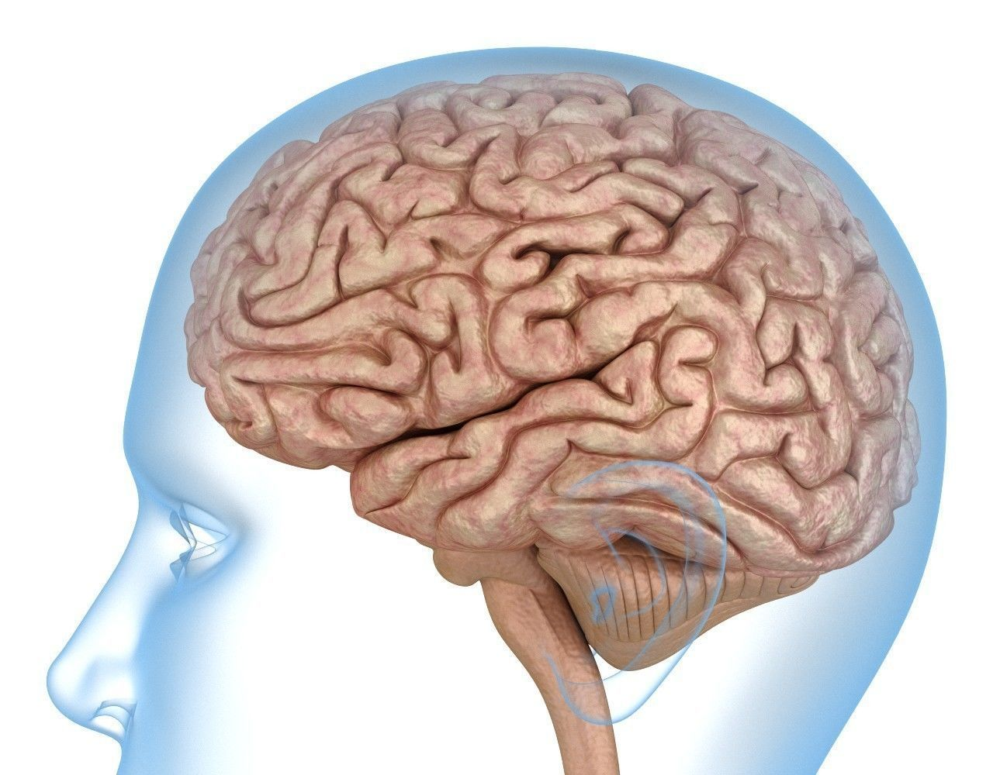
Input → Computation → Output
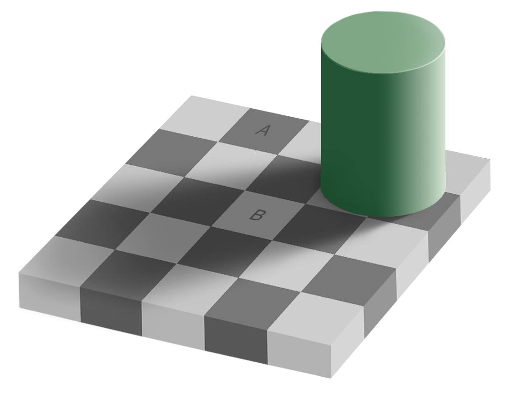
Checker shadow illusion, Edward H. Adelson
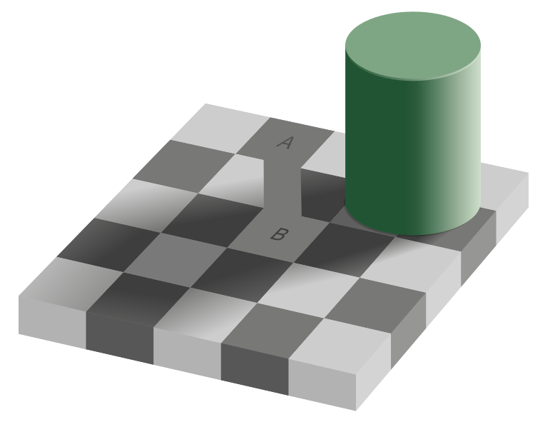
Edward H. Adelson
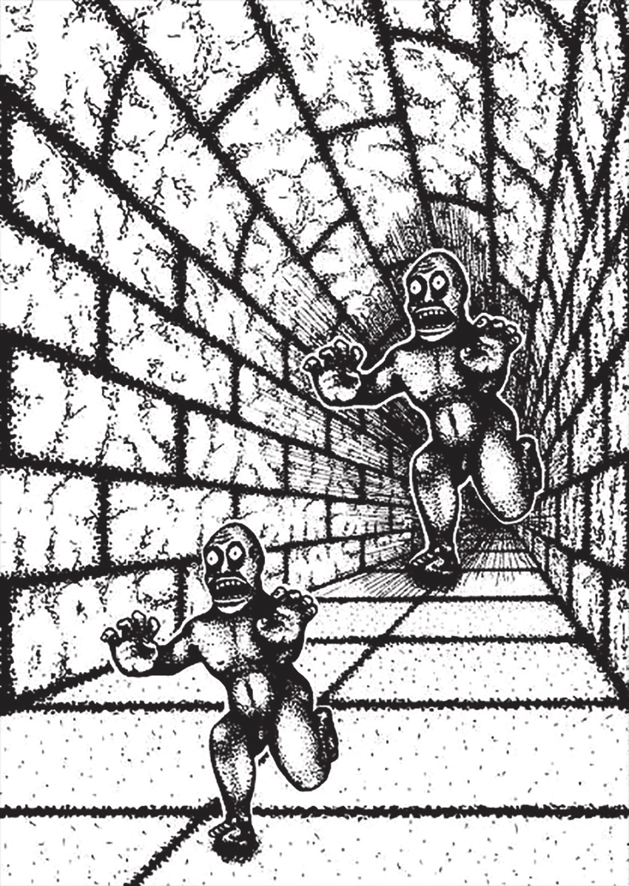
Roger Shepard, Terror Subterra
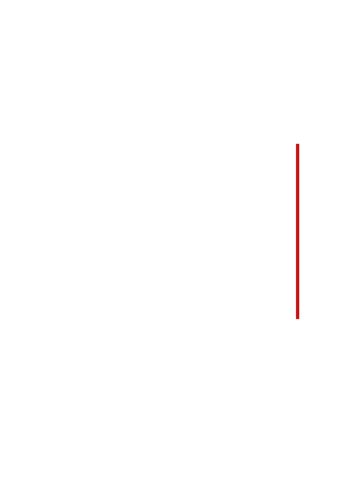
Roger Shepard, Terror Subterra
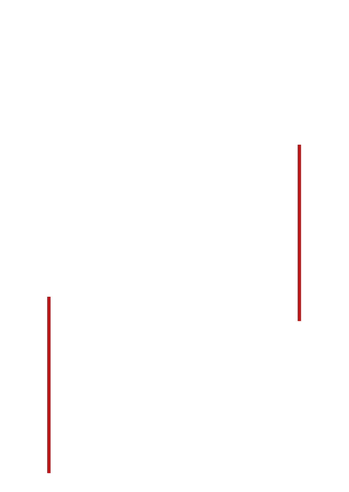
Roger Shepard, Terror Subterra
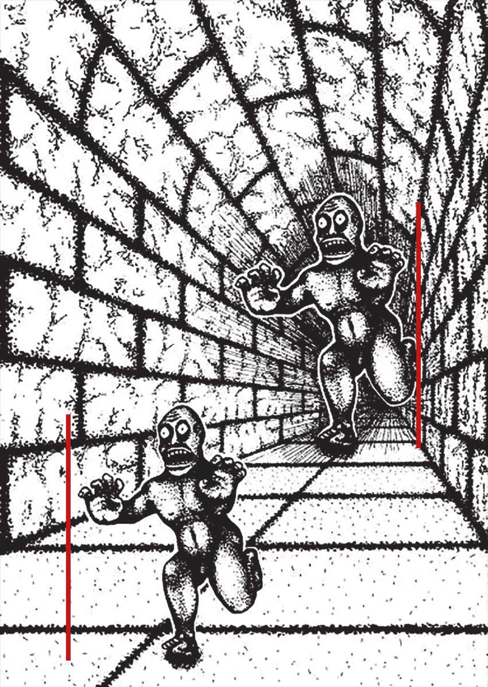
Roger Shepard, Terror Subterra
Visual illusions occur because our brains rely on certain standard operating procedures (e.g., correcting for shadows).
These procedures use simplified assumptions about how the world works.
The idea behind today’s lecture is that this is also true for information processing.
The world is too complex to reason through every judgement and decision from scratch.
Most of the time they serve us well. Sometimes they lead to choices that look odd from the outside.
We will look at five mental models that matter for communicating about climate change.
Back to our experiment. Why would “saved” and “die” lead to different choices?
“choices involving gains are often risk averse and choices involving losses are often risk taking”
In our experiment: faced with a certain loss (400 deaths), most people (78%) preferred the gamble that offered a chance of losing nothing.
In other words, people try hard to avoid losses (more than they try to increase gains).
Would you rather receive CHF 100 today, or CHF 110 in a year?
In 61 countries, 13,629 people were asked this kind of question: an amount of money now, or 10% more in 12 months (Ruggeri et al., 2022).
For participants in the United States, this meant US$500 immediately or US$550 in one year.
The result: “Temporal discounting was present in all countries, with only modest variability in national means”.
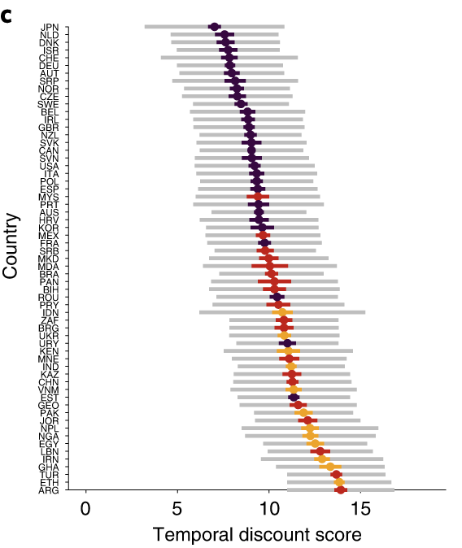
(Fig. 4c from Ruggeri et al., 2022, CC BY 4.0, cropped)
What causes more deaths: tornadoes or asthma?
In the original study, students saw tornadoes as more frequent killers than asthma, “even though the latter is 20 times more likely” (Lichtenstein et al., 1978).
From today’s reading (Van Der Linden et al., 2015):
In the United Kingdom, people who were late with their tax payment received a reminder letter. Some of these letters included one additional sentence, for example: “Nine out of ten people pay their tax on time.”
Across two field experiments with more than 200,000 people, including such messages “increases payment rates for overdue tax” (Hallsworth et al., 2017).
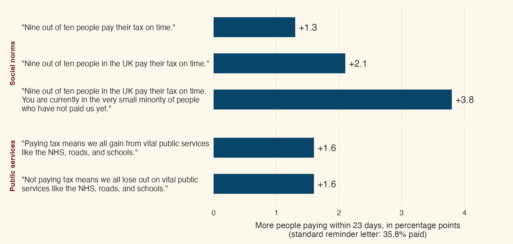
(Own figure, data from Table 4 in Hallsworth et al., 2017)
Imagine you are about to buy a jacket for $125 and a calculator for $15. The calculator is on sale for $10 at another branch of the store, 20 minutes’ drive away. Would you make the trip?
Now imagine the calculator costs $125 and is on sale for $120 at the other branch. Would you make the trip?
In the original study, 68% were willing to make the trip to save $5 on a $15 calculator. Only 29% were willing to make the same trip to save $5 on a $125 calculator (Tversky & Kahneman, 1981).
People do not seem to treat the $5 as simply $5. They set it against the price of the item, as if each purchase had its own account.
This is called mental accounting: people seem to keep separate mental budgets, and money in one budget is not treated like money in another.
They are two sides of the same coin.
A framing effect is the “odd observation”, where the same information only packaged slightly differently causes different reactions.
If similar framing effects are regularly appearing across contexts, we call it a mental model.
How to package the essentially same information slightly differently, so that it appeals to mental models.
What’s the evidence on framing effects in climate change communication?
“Much of the media, scientific, and policy discourse around climate change has consistently invoked the idea of ‘losses.’ For example, climate solutions are often framed as an immediate loss for society (e.g., higher taxes, reducing energy consumption).” (Van Der Linden et al., 2015)
In one experiment, 161 participants read the same information about climate change impacts, framed either in terms of gains or in terms of losses (Spence & Pidgeon, 2010).
Gain frame
“By mitigating climate change, we can prevent further increases in winter floods in maritime regions and flash floods throughout Europe.”
“By preventing further sea-level rises, we can prevent the inland migration of beaches and save up to 20% of coastal wetlands …”
Loss frame
“Without mitigating climate change, we will see further increases in winter floods in maritime regions and flash floods throughout Europe.”
“With further sea-level rises, beaches will migrate inland and threaten up to 20% of coastal wetlands …”
Gain frames led to more positive attitudes towards climate change mitigation than loss frames.
How are these findings (gain frames beat loss frames) compatible with loss aversion (losses weigh more than gains)?
Go read the section in the paper again and discuss with your neighbor (5 minutes).
(Insight 4 in the reading, “Framing the Big Picture: Nobody Likes Losing (but Everyone Likes Gaining)”)
They are not compatible.
Important take-away: mental models are no universal rules that always apply in different contexts.
Sometimes, other factors are more important. In this case, maybe providing hope and optimism.
For many people, climate change is distant in all three ways at once: “a nonurgent and psychologically distant risk—spatially, temporally, and socially” (Van Der Linden et al., 2015).
The reading’s advice: “Emphasize the present and make climate change impacts and solutions locally relevant.”
In a group experiment framed around climate change, participants could contribute money to avoid a collective loss.
The rewards of cooperating were paid out after one day, after seven weeks, or several decades later.
With a delay of several decades, cooperation decreased markedly: “all groups failed to reach the collective target”. The seven-week delay had a weaker effect.
“Statistical descriptions of the risk of climate change often fail to elicit action because statistical information, by itself, means very little to (most) people. Experience, on the other hand, can be a powerful teacher.” (Van Der Linden et al., 2015)
582 Americans and 290 Australians were asked how convinced they are that global warming is happening, and whether the day was colder or warmer than usual (Li et al., 2011).
Those who found the day much warmer than usual were about one point more convinced, on a 4-point scale, than those who found it much colder.
In a further study, they also donated more to a climate charity: $2.04 on average, against $0.48.
People who found today warmer than usual also reported more unusually warm days over the past year (N = 270, r = 0.41) (Zaval et al., 2014). What is available today seems to colour the memory of the whole year.
“the more people hear social referents (e.g., family and friends) talk about the risk of climate change, and the more climate change is viewed within one’s social network as a risk that requires action, the more it amplifies an individual’s own risk perception and intention to act” (Van Der Linden et al., 2015)
Would you be willing to give 1% of your income to fight climate change?
What share of people in your country do you think would say yes?
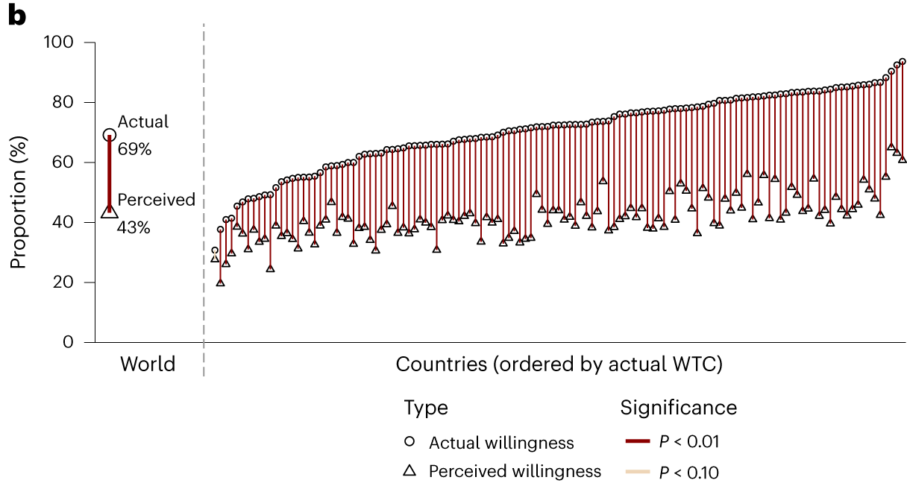
(Fig. 3b from Andre et al., 2024, CC BY 4.0, cropped)
If people underestimate how much others care about climate change, the norm they respond to is weaker than the real one. This could hold climate action back.
Our mental model 4 suggests a simple fix: tell people how many others care.
In a study across 11 countries, giving people the actual numbers was “largely ineffective” (Geiger et al., 2025).
In the United States, households received letters “comparing their electricity use to that of their neighbors”. In randomised field experiments with 600,000 households, these reports reduced energy consumption by 2.0% on average (Allcott, 2011).
This equals the effect of a short-run electricity price increase of 11 to 20%. And it lasts: when the reports stopped after two years, the effect decayed by only 10 to 20 percent per year (Allcott & Rogers, 2014).
A synthesis of 430 field studies on climate-friendly behaviour found that “interventions based on social comparisons or financial incentives were the most effective” (Bergquist et al., 2023).
“97% of climate scientists agree that human-caused climate change is happening.”
Across 27 countries (n = 10,527), the consensus message substantially reduced misperceptions and slightly increased climate change beliefs. It did not directly increase support for public action (Većkalov et al., 2024).
Carbon taxes meet strong public resistance. How acceptable they are depends on what happens with the revenue.
Across six experiments in the United Kingdom and France (N = 7,100), a carbon tax was more acceptable when its revenue went to environmental projects (Mus et al., 2023).
The authors’ explanation: people expect money raised in one domain to be spent in that same domain. The same pattern appeared for tobacco taxes and health spending, and for inheritance taxes and social spending.
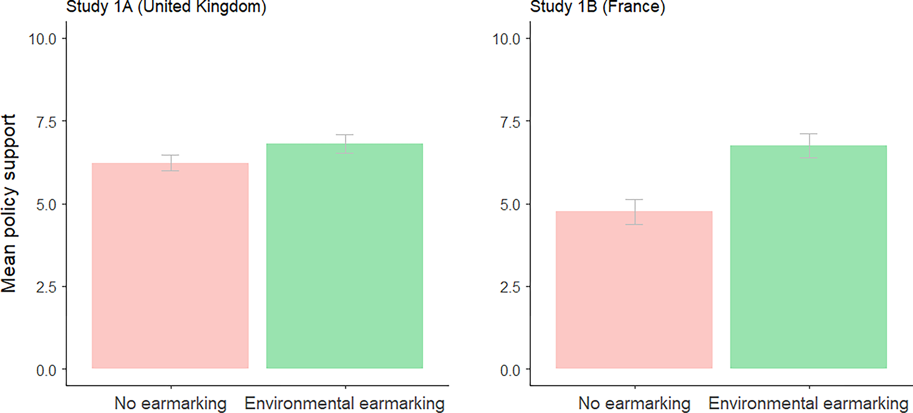
(Fig. 2 from Mus et al., 2023, CC BY 4.0)
Not every frame builds on one of our five mental models.
Some frames seem to work through the words that are chosen, or through the values and identities that a message appeals to.
Is it “global warming” or “climate change”?
In a survey experiment with 2,267 Americans, Republicans were less likely to say the phenomenon is real when it was called “global warming” (44.0%) than when it was called “climate change” (60.2%).
Democrats were unaffected by the wording (86.9% and 86.4%).
898 Americans chose between otherwise identical products. One of them included a surcharge for emitted carbon dioxide.
The surcharge was labelled either as a “tax” or as an “offset”.
The label changed the preferences of Republicans and Independents. It did not affect the preferences of Democrats.
Environmental messages are mostly phrased in terms of harm and care, moral concerns that are more deeply held by liberals than by conservatives.
When pro-environmental messages were reframed in terms of purity, a value that resonates more among conservatives, the difference in environmental attitudes between liberals and conservatives was “largely eliminated”.
In the United States, pro-environmental initiatives were framed “as patriotic and necessary to maintain the American ‘way of life’”.
This framing increased belief in climate change and support for climate policies (Mason et al., 2024).
The same climate trend can be shown as continuous data (mean temperature) or as binary data (did the lake freeze this winter, yes or no).
People who saw the binary data perceived the impact of climate change as larger (d = 0.40, N = 799) (Liu et al., 2025).
The authors link this to the “boiling frog” effect: a slow, gradual shift is easy to overlook.
How big are the effects?
A megastudy tested the ten most-cited climate messaging strategies on 13,544 Americans (Voelkel et al., 2026).
Six of the ten messages changed attitudes, by 1 to 4 percentage points.
No message increased donations to environmental causes.
59,440 participants were assigned to one of 11 interventions designed by experts (Vlasceanu et al., 2024).
Effects were small, and largely limited to people who were not sceptical about climate change to begin with.
Reducing psychological distance, our mental model 2, strengthened climate beliefs by 2.3%.
No intervention increased an effortful behaviour, a task that led to trees being planted. Several interventions reduced it.
The patriotic frame from the United States was also tested across 63 countries. Similar messages had small effects on average (Mason et al., 2024).
In some countries the frame was moderately successful (Brazil, France, Israel). In others it backfired (Germany, Belgium, Russia).
Effects of messaging interventions, even if framed by psychological researchers who are experts, are small.
They typically shift attitudes by only a few percentage points.
In week 2, part of the conclusion was that facts alone rarely change minds.
A recent line of research complicates this picture.
2,190 people who believed in a conspiracy theory discussed it with an AI model, which responded with evidence tailored to their own arguments (Costello et al., 2024).
Belief in the conspiracy theory fell by about 20%.
The effect was still there two months later, even among participants with deeply entrenched beliefs.
Here the picture is more mixed. In two studies, climate sceptics had short conversations with ChatGPT (Hornsey et al., 2025).
The conversations led to small increases in intentions to act, and to less confidence in sceptical views.
The effects on scepticism itself were inconsistent across the two studies, and they tended to fade over time.
Why do facts seem to work in conversations with chatbots?
Pierre looks at Linda. Linda looks at Henry.
Pierre is married. Henry is not married.
Does someone who is married look at someone who is not married?
Yes · No · We cannot know
“The main function of reasoning is argumentative” (Mercier & Sperber, 2011).
On this view, reasoning “should produce its best results” in group discussions. In a classic logic task, about 10% of people find the correct answer alone. In groups, 80% do.
Alone, people mostly look for “arguments supporting their views”. In a discussion, others evaluate these arguments.
A review of the evidence on religious proselytizing, propaganda, political campaigns and advertising concludes that “communication is much less influential than often believed” (Mercier, 2017).
People seem to check messages against what they already believe, and against how much they trust the source.
“Beliefs that lead to costly behavior are even less likely to be accepted.” This fits what the large climate studies found.
A single message cannot answer back. In a discussion, a person’s counterarguments can be addressed one by one.
In a study on genetically modified organisms (GMOs), giving people good arguments that rebut the most common counterarguments led to much more positive attitudes towards GMOs (Altay et al., 2022).
This may also explain the conversations with an AI. Earlier attempts may have failed because the counterevidence was “insufficiently compelling and tailored” (Costello et al., 2024).
Mental models are general features of human psychology that describe how people think, decide, and act. They often seem to deviate from rational choice.
Framing means packaging essentially the same information differently, by appealing to these mental models.
Mental models are no universal rules that always apply in different contexts. Sometimes, other factors are more important.
For climate change, large studies suggest that framing helps modestly: a few percentage points on attitudes, and little on costly behaviour.
Facts still matter: they seem to work better in a dialogue, where arguments can be exchanged, than in one-way messages.
4. Social norms
“People are social beings who respond to group norms” (Van Der Linden et al., 2015)
We pay close attention to what others think and do, and we tend to adjust to it.